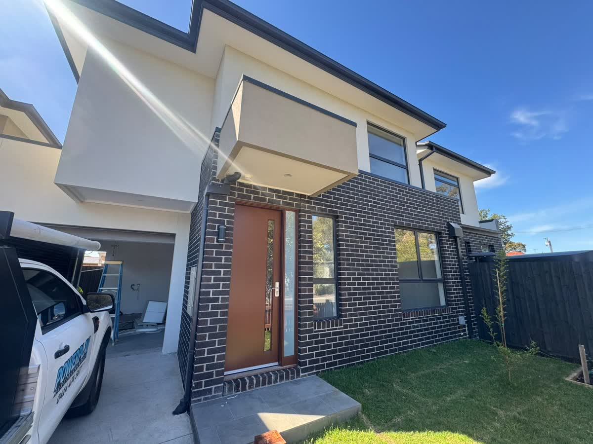
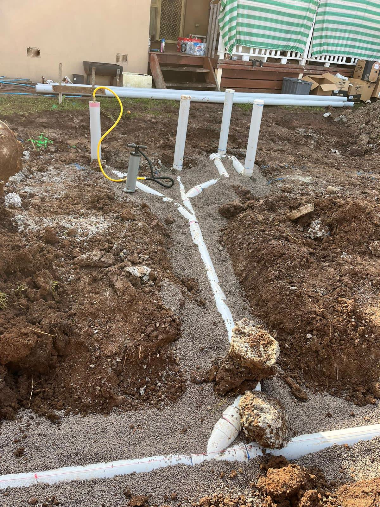
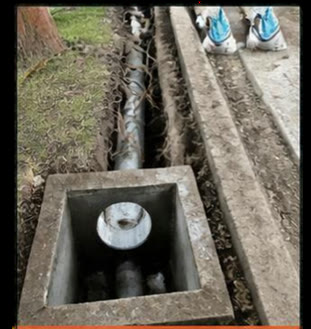
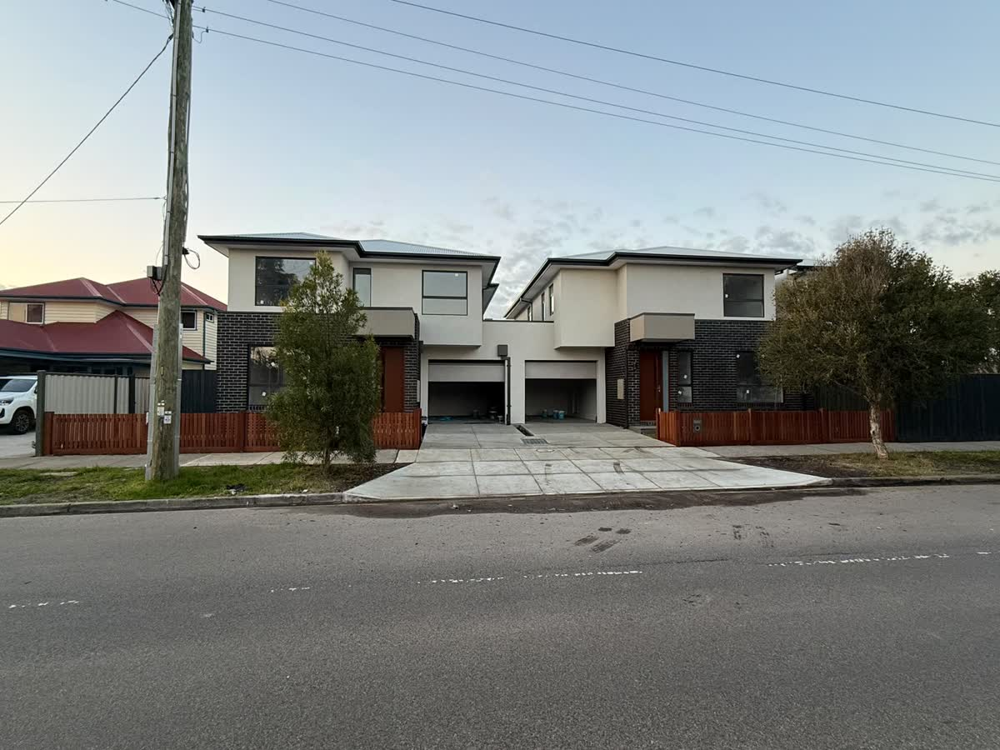
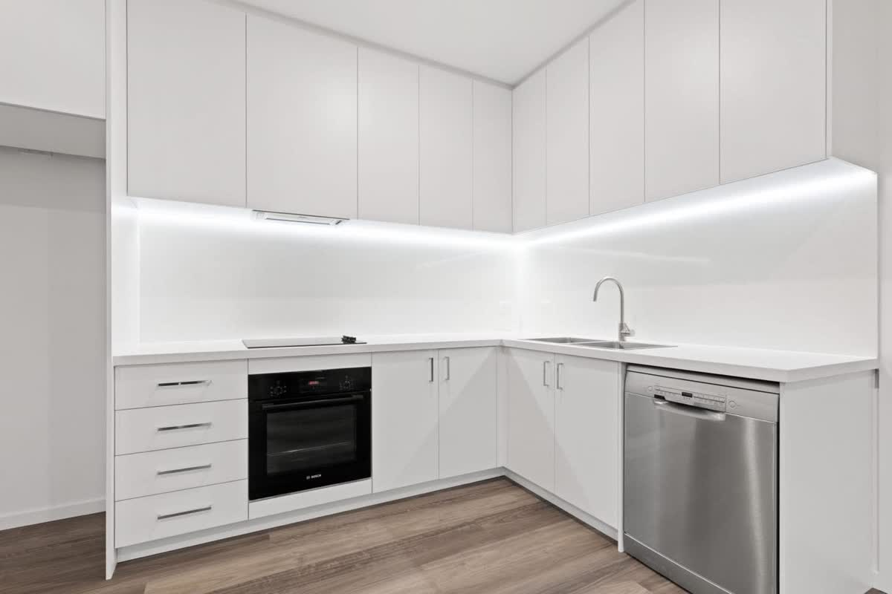
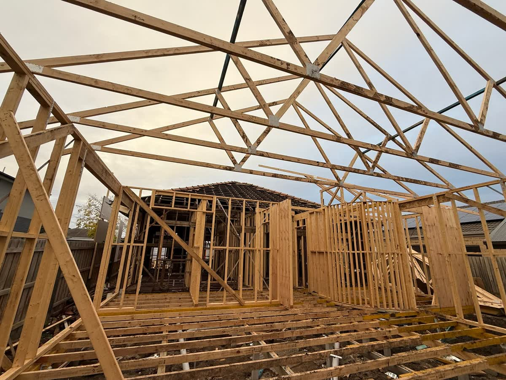
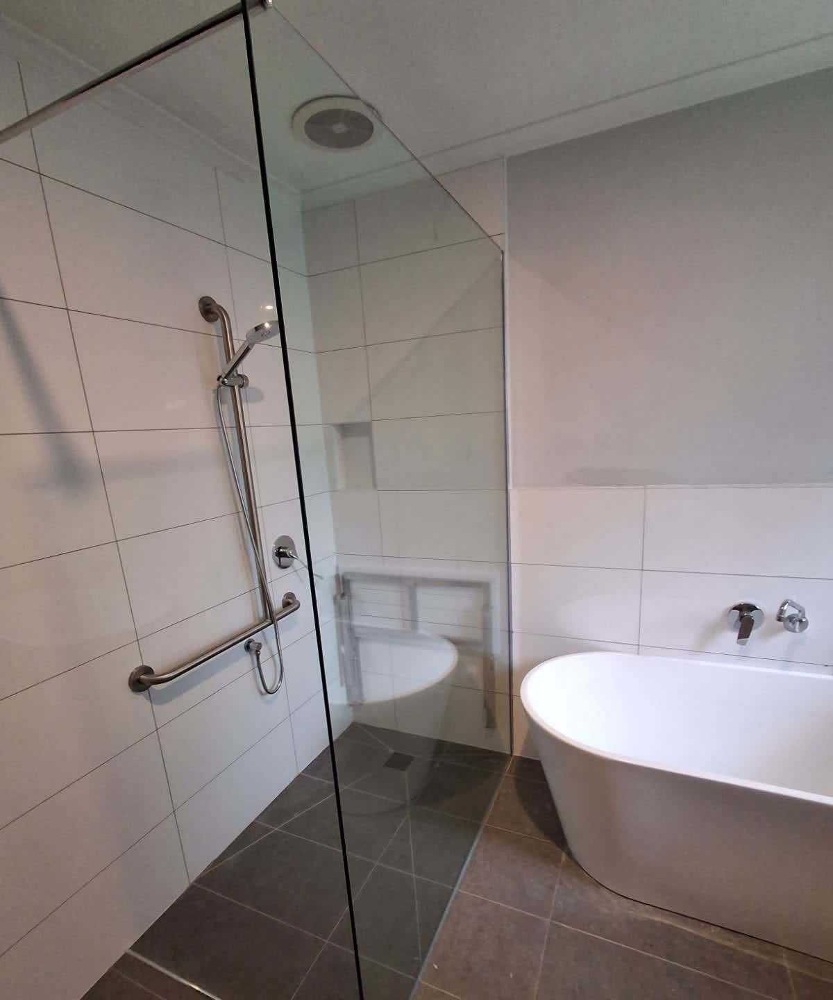
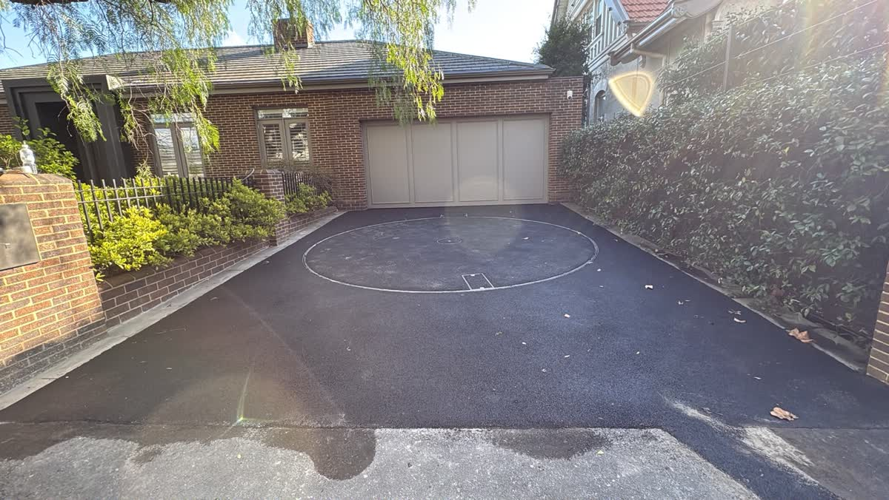
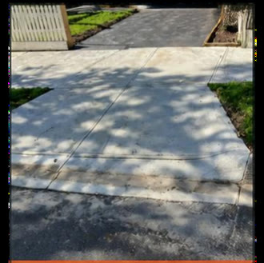
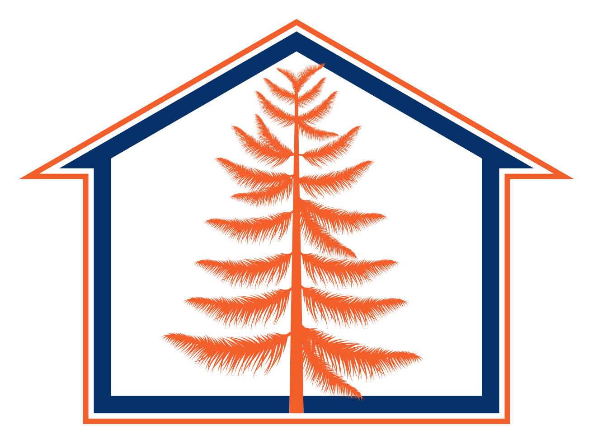

Building · Building permits · Civil · Melbourne
Building and civil works, from the ground up.
Wollemi Group builds homes, granny flats and NDIS home modifications, and does civil and concrete works. Our registered building surveyor also assesses plans and issues building permits.
Wollemi jobs in Brighton, Kew and Albion

For homeowners
Building or renovating?
Custom homes, granny flats, renovations and extensions, and NDIS home modifications.
Building →For owners, designers and builders
Need a building permit?
Plan assessment, building permits, stage inspections and final sign-off from our registered building surveyor.
Building permits →
For builders and project teams
Need civil or concrete work?
Pits and pipes, drainage, council footpaths, kerb and channel, digging and complex concrete.
Civil and concrete →The ground and the build, planned together
Wollemi does building and civil works, so the drainage and concrete are planned with the build from the start. We also have a registered building surveyor, who issues permits and does inspections on jobs we don't design or build.
- Building and civil works from one business
- Building permits and inspections, on jobs we don't design or build
- NDIS modifications: stepless entries, wider doorways, bathrooms, hoists and ramps
- Vehicle turntables and complex concrete

What we do

Custom homes and developments
New homes, boutique and multi-unit developments, built to your plans and your block.

Granny flats
Small second dwellings for family, a studio or a rental, on your existing block.

Renovations and extensions
From minor updates to complete renovations, and commercial fit-outs.

NDIS home modifications
Changes to a home for an NDIS participant, small or structural, alongside their OT.

Vehicle turntables
So cars on tight blocks and narrow driveways can drive out forwards.

Footpaths, kerbs and crossovers
Built to the council's specification, with the pits and pipes that go with them.
How a build runs
First talk
We talk through what you want to build, your budget and the site.
Design
A design that works for how you'll use it and meets the building rules.
Building permit
An independent registered building surveyor checks the plans and issues the permit. By law you, the owner, appoint them, not the builder. You can also use the council's building surveyor.
Construction
We build it, including the civil works. The surveyor inspects at the stages set in the permit.
Handover
The surveyor issues the final document the job needs, an occupancy permit or a certificate of final inspection, and we hand over.
Surveyor, or designer and builder. Never both on one job.
Under Victoria's Building Act, our surveyor can't issue the permit or do the inspections on a job that Wollemi designs or builds. If we issue your permit, you choose the builder, and we have no arrangement with them. If we design or build it, you appoint an independent building surveyor, who issues the permit and does the inspections.
Why Wollemi
The Wollemi pine is a living fossil that has survived in Australia for millions of years. This ancient and resilient tree represents our commitment to quality, ensuring our work is built to last.

Talk to us about your project
Book a time for us to see the site, or call Ben on 0481 008 080. Send plans or photos with your enquiry and we'll come back to you with the next step.